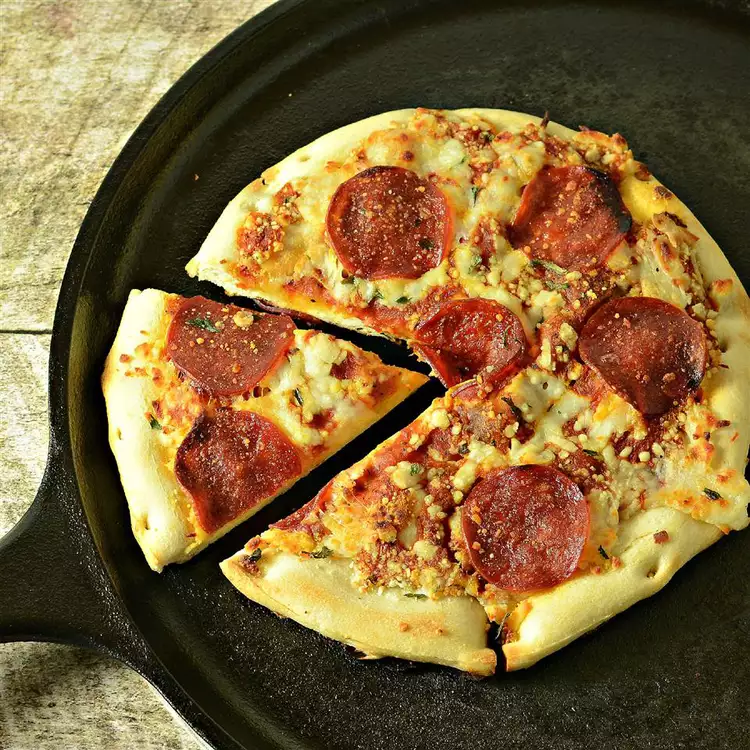

Campfire Pepperoni Pizza

Description
"The smokey flavor from the wood fire puts a great twist on an old favorite
and with the help of a pizza stone, doing this over an open fire is easier
than you may think," says recipe creator gonefishn.
Ingredients
- 1 pound refrigerated pizza dough
- 1/4 cup pizza sauce
- 1/2 cup shredded mozzarella cheese
- 1/2 cup shredded sliced pepperoni
Steps
- Place pizza stone on grill directly over wood fire.
You may need to begin by spreading out the wood if
the flames are too tall. Roll out the pizza dough to
desired thickness. Place it on the pizza stone and
cook 10 minutes on one side until golden.
- Remove from the fire and on the cooked side, spread
the pizza sauce in an even layer over dough leaving
about a half inch around the rim of the pizza dough bare.
Sprinkle mozzarella cheese evenly on top of the sauce,
followed by the pepperoni slices.
- Place uncooked side down, back on the pizza stone.
Cover with a foil tent and cook until cheese has melted,
about 10 minutes more. Transfer pizza to a cutting board
and let cool slightly before cutting and serving.